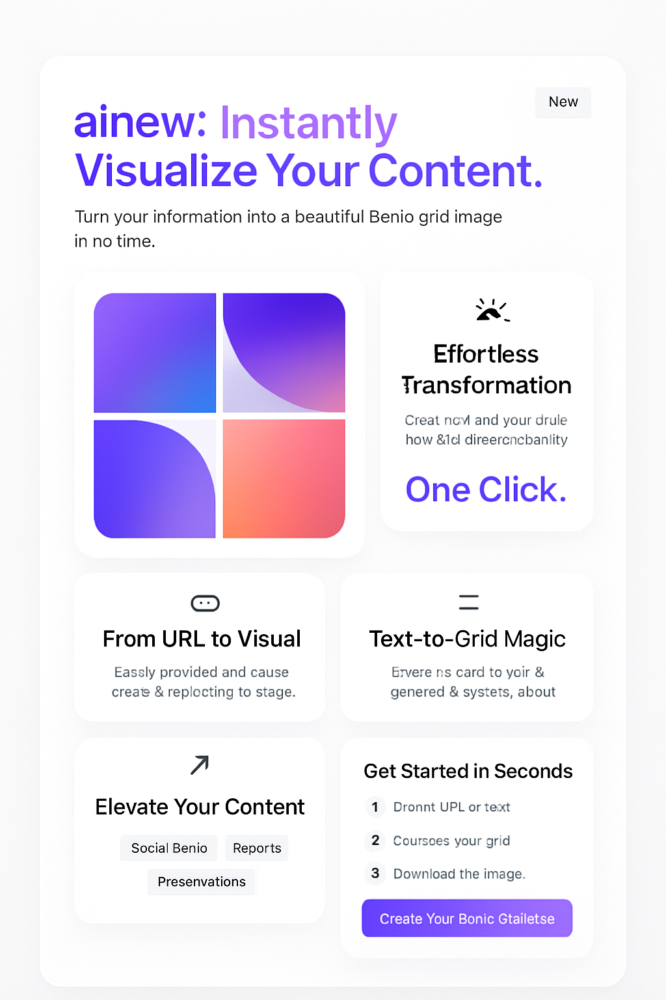

新！
新视力：让内容一目了然。
借助AI的力量，将文章、链接（包括微信公众号）转化为令人惊叹的Bento Grid图片。

一键完成
智能分析
只需粘贴你的链接或文本。基于先进的AI技术，智能提取并分析内容，生成结构化美观的展示。
微信文章支持
直接输入微信公众号文章链接。新视力自动抓取正文、标题、作者，生成精美分区展示。
多分区展示
智能将内容拆分为summary、tags、作者、原文等多个卡片区域，使复杂信息变得直观易懂。
提升内容价值
完美适用于内容创作者、知识工作者和教育工作者。让信息更容易理解和分享。